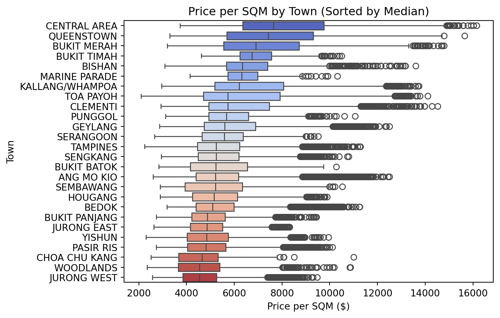
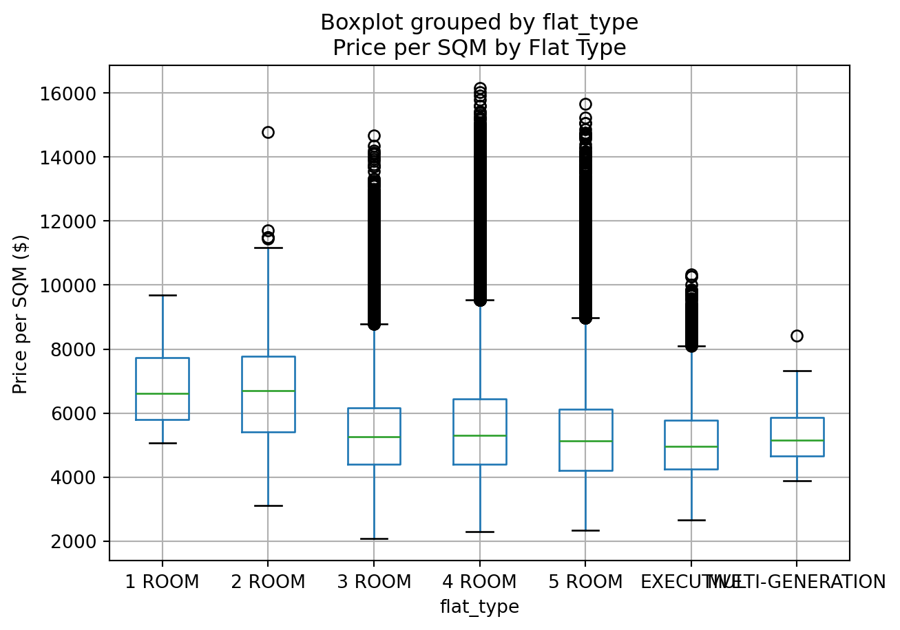
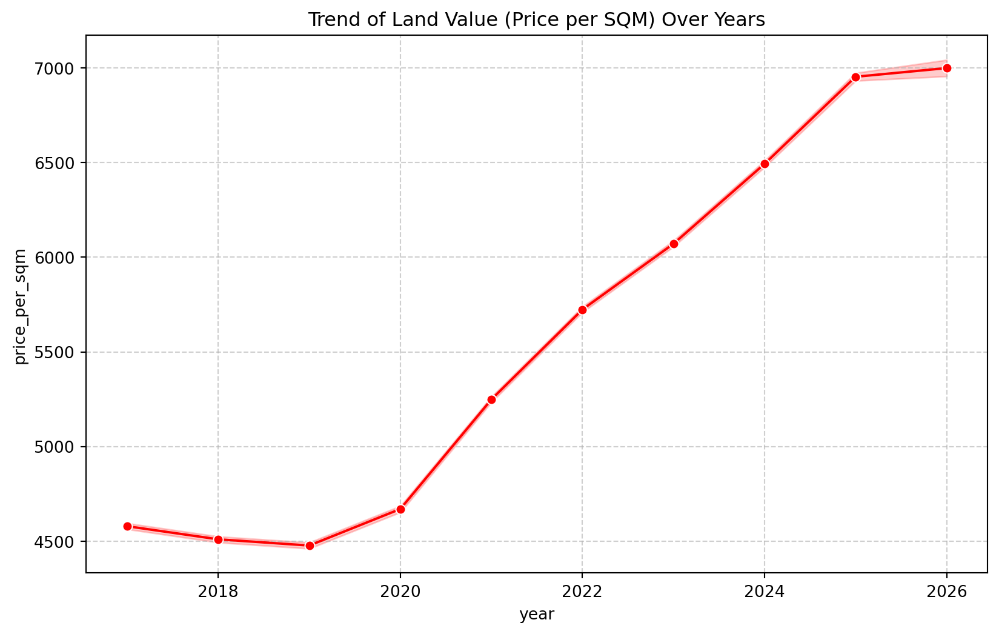
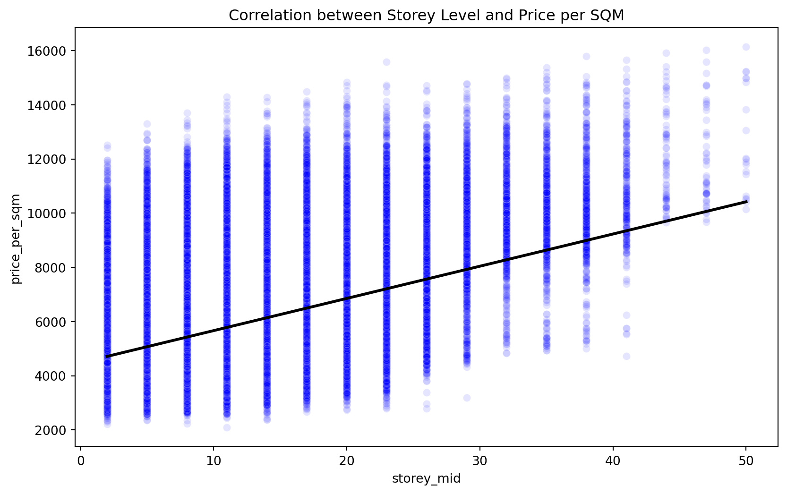
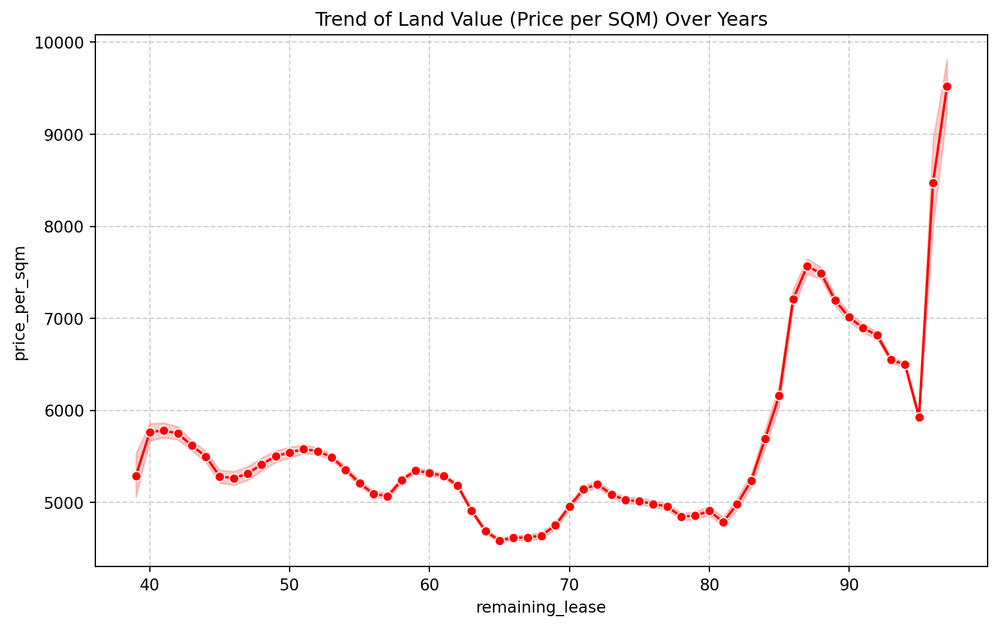
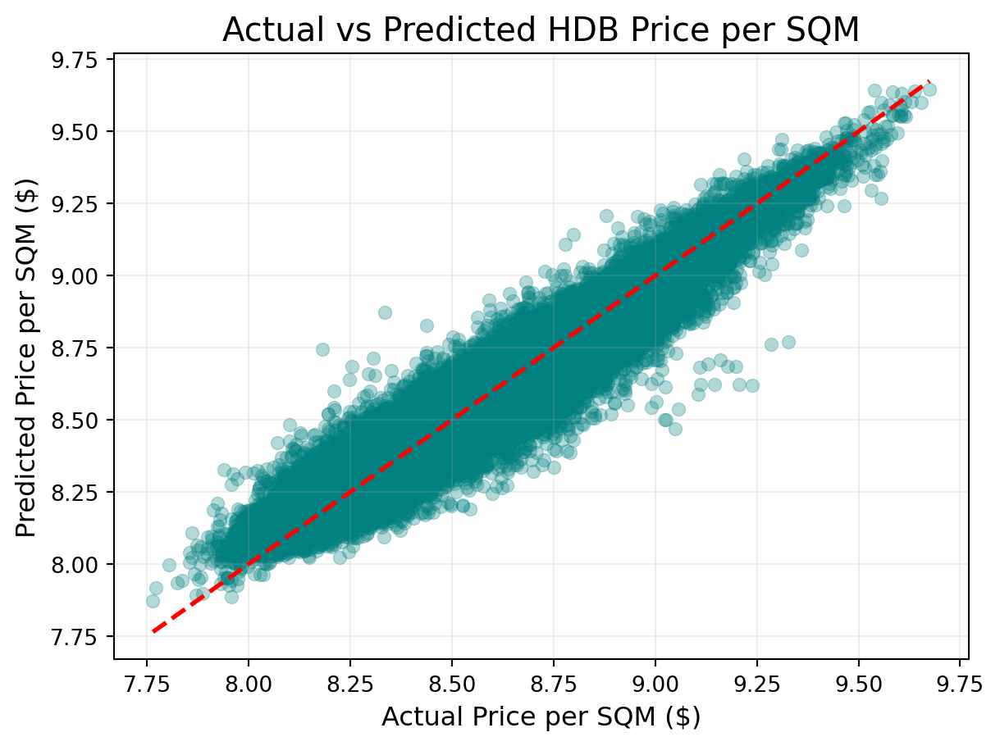
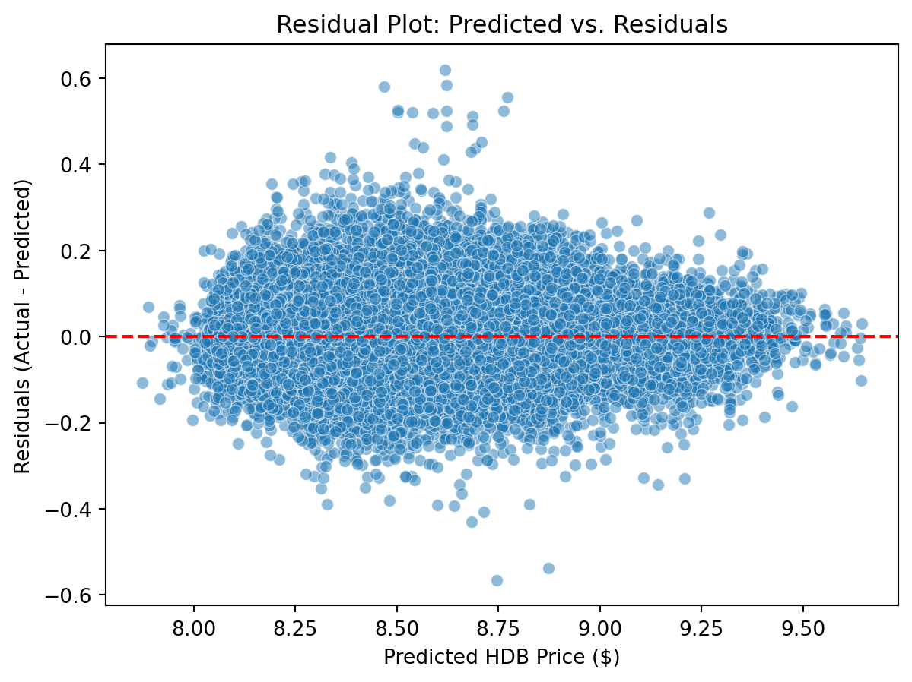

Evaluating different HDB features using ensemble model (Random Forest & XGBoost).
Machine Learning
XGBoost
Random Forest
Author
Ying Hui Tan
Published
June 4, 2026
Business Context & Problem Statement
Business Context
The real estate market in Singapore is highly dynamic and plays a critical role in the economy. In particular, Housing & Development Board (HDB) resale flats form a large portion of residential transactions, making price transparency and accurate valuation essential.
However, resale flat prices are influenced by multiple factors such as: * Location * Flat type * Remaining lease * Market conditions over time
This complexity makes it difficult for buyers, sellers, and policymakers to determine fair property values.
Problem Statement
How can we accurately predict HDB resale flat prices based on historical transaction data and property attributes?
Business Value
For Buyers: Avoid overpaying for properties; Make data-driven purchase decisions.
For Sellers: Price flats competitively; Reduce time on market.
For Real Estate Platforms / Agencies: Provide automated valuation tools; Improve customer trust and engagement.
For Government / Policymakers: Monitor housing affordability; Detect abnormal price trends.
Data Ingestion & Initial Inspection
import kagglehubimport pandas as pdimport osimport numpy as npimport matplotlib.pyplot as pltimport seaborn as sns# Download datasetpath = kagglehub.dataset_download("yingghui233/hdb-resale-pricing-singapore")# Find csv name & make it a dataframefiles = os.listdir(path)csv_file = os.path.join(path, files[0])hdb = pd.read_csv(csv_file)print(hdb.head())# data inspectionprint(hdb.info())print(hdb.describe())
Warning: Looks like you're using an outdated `kagglehub` version (installed: 0.3.12), please consider upgrading to the latest version (1.0.0).
month town flat_type block street_name storey_range \
0 2017-01 ANG MO KIO 2 ROOM 406 ANG MO KIO AVE 10 10 TO 12
1 2017-01 ANG MO KIO 3 ROOM 108 ANG MO KIO AVE 4 01 TO 03
2 2017-01 ANG MO KIO 3 ROOM 602 ANG MO KIO AVE 5 01 TO 03
3 2017-01 ANG MO KIO 3 ROOM 465 ANG MO KIO AVE 10 04 TO 06
4 2017-01 ANG MO KIO 3 ROOM 601 ANG MO KIO AVE 5 01 TO 03
floor_area_sqm flat_model lease_commence_date remaining_lease \
0 44.0 Improved 1979 61 years 04 months
1 67.0 New Generation 1978 60 years 07 months
2 67.0 New Generation 1980 62 years 05 months
3 68.0 New Generation 1980 62 years 01 month
4 67.0 New Generation 1980 62 years 05 months
resale_price
0 232000.0
1 250000.0
2 262000.0
3 265000.0
4 265000.0
<class 'pandas.core.frame.DataFrame'>
RangeIndex: 228225 entries, 0 to 228224
Data columns (total 11 columns):
# Column Non-Null Count Dtype
--- ------ -------------- -----
0 month 228225 non-null object
1 town 228225 non-null object
2 flat_type 228225 non-null object
3 block 228225 non-null object
4 street_name 228225 non-null object
5 storey_range 228225 non-null object
6 floor_area_sqm 228225 non-null float64
7 flat_model 228225 non-null object
8 lease_commence_date 228225 non-null int64
9 remaining_lease 228225 non-null object
10 resale_price 228225 non-null float64
dtypes: float64(2), int64(1), object(8)
memory usage: 19.2+ MB
None
floor_area_sqm lease_commence_date resale_price
count 228225.000000 228225.000000 2.282250e+05
mean 96.726880 1996.495134 5.280684e+05
std 24.016444 14.330686 1.885150e+05
min 31.000000 1966.000000 1.400000e+05
25% 81.000000 1985.000000 3.880000e+05
50% 93.000000 1997.000000 4.980000e+05
75% 112.000000 2012.000000 6.350000e+05
max 366.700000 2021.000000 1.700000e+06
Feature Engineering and Selection
For this particular dataset, we would focus on 6 main factors: * Time (Year) * Town (categorical) * Flat-type (categorical) * Storey (Numerical) * Lease Remaining (Numerical)
Note that every government flats in Singapore have a maximum lease of 99 years, hence, lease remaining would be the 99 - (current_year - year_built).This is the formula for the column remaining_lease that is already in the dataset.
The dependent variable (y), would be resale_price/floor_area_sqm, we can rename that as Price_per_sqm.
# create price_per_sqm (y)hdb['price_per_sqm'] = hdb['resale_price']/hdb['floor_area_sqm']# Convert to datetime objectshdb['month'] = pd.to_datetime(hdb['month'])# Create a 'year' and 'month_num' columnhdb['year'] = hdb['month'].dt.yearhdb['month_val'] = hdb['month'].dt.month# convert remaining_lease into a pure numerical numberhdb['remaining_lease'] = hdb['remaining_lease'].str.extract('(\d+)').astype(float)# use the midpoint of storeyhdb['storey_mid'] = hdb['storey_range'].apply(lambda x: (int(x.split(' TO ')[0]) +int(x.split(' TO ')[1])) /2)# check new featuresprint(hdb[['year','month_val','town', 'flat_type', 'storey_mid', 'remaining_lease', 'price_per_sqm']].head())hdb_df = hdb[['year','town', 'flat_type', 'storey_mid', 'remaining_lease', 'price_per_sqm','month_val']]
year month_val town flat_type storey_mid remaining_lease \
0 2017 1 ANG MO KIO 2 ROOM 11.0 61.0
1 2017 1 ANG MO KIO 3 ROOM 2.0 60.0
2 2017 1 ANG MO KIO 3 ROOM 2.0 62.0
3 2017 1 ANG MO KIO 3 ROOM 5.0 62.0
4 2017 1 ANG MO KIO 3 ROOM 2.0 62.0
price_per_sqm
0 5272.727273
1 3731.343284
2 3910.447761
3 3897.058824
4 3955.223881
After considering all features, we would plot these features to see the trend of features to price_per_sqm. Boxplot is used for categorical data such as flat type or town; normal line plot is used for numerical data.
import seaborn as snsimport matplotlib.pyplot as plt# town to price_per_sqm (boxplot)town_order = hdb_df.groupby('town')['price_per_sqm'].median().sort_values(ascending=False).indexsns.boxplot(data=hdb_df,y='town',x='price_per_sqm',order=town_order,palette='coolwarm')plt.title('Price per SQM by Town (Sorted by Median)')plt.xlabel('Price per SQM ($)')plt.ylabel('Town')plt.show()# boxplot for flat typeplt.figure(figsize=(10, 6))hdb_df.boxplot(column='price_per_sqm',by='flat_type')plt.ylabel('Price per SQM ($)')plt.title('Price per SQM by Flat Type')# time-cost trend (year)plt.figure(figsize=(10, 6))sns.lineplot(data=hdb, x='year', y='price_per_sqm', marker='o', color='red')plt.title('Trend of Land Value (Price per SQM) Over Years')plt.grid(True, linestyle='--', alpha=0.6)plt.show()# time-cost trend (month)plt.figure(figsize=(10, 6))sns.lineplot(data=hdb, x='month_val', y='price_per_sqm', marker='o', color='red')plt.title('Trend of Land Value (Price per SQM) Over Years')plt.grid(True, linestyle='--', alpha=0.6)plt.show()# storeyplt.figure(figsize=(10, 6))sns.scatterplot(data=hdb, x='storey_mid', y='price_per_sqm', alpha=0.1, color='blue')# Adding a regression line helps see the "Upward Slope" clearlysns.regplot(data=hdb, x='storey_mid', y='price_per_sqm', scatter=False, color='black')plt.title('Correlation between Storey Level and Price per SQM')plt.show()# remaining leaseplt.figure(figsize=(10,6))sns.lineplot(data=hdb, x='remaining_lease', y='price_per_sqm', marker='o', color='red')plt.title('Trend of Land Value (Price per SQM) Over Years')plt.grid(True, linestyle='--', alpha=0.6)plt.show()
C:\Users\tanyi\AppData\Local\Temp\ipykernel_38492\3113747980.py:6: FutureWarning:
Passing `palette` without assigning `hue` is deprecated and will be removed in v0.14.0. Assign the `y` variable to `hue` and set `legend=False` for the same effect.

<Figure size 960x576 with 0 Axes>




Boxplot for categorical data looks like different category varries in price_per_sqm. To confirm the suspicion, we can use ANOVA to determine if there is indeed difference between at least one group.
import statsmodels.api as smfrom statsmodels.formula.api import ols# ANOVA for categorical variablescat_variables = hdb_df[['town','flat_type']]for col in cat_variables: lm = ols(f'price_per_sqm~C({col})',data = hdb_df).fit() anova = sm.stats.anova_lm(lm)print(f'Variable: {col}')print(anova)print('\n')
Variable: town
df sum_sq mean_sq F PR(>F)
C(town) 25.0 1.454679e+11 5.818717e+09 2853.524038 0.0
Residual 228199.0 4.653282e+11 2.039134e+06 NaN NaN
Variable: flat_type
df sum_sq mean_sq F PR(>F)
C(flat_type) 6.0 1.242012e+10 2.070019e+09 789.4963 0.0
Residual 228218.0 5.983760e+11 2.621949e+06 NaN NaN
Summary:
price_per_sqm is calculated by dividing price by area to normalize the flat size. Use log transformation as some prices are significantly higher than the others.
One hot encoding should be implemented for categorical factors like town and flat_type so that models like linear regression can process them.
Using ANOVA, town and flat_type is significant in the linear model, hence, this two are significant predictor under 5% level of significance.
By looking at the visualisation for year, storey, and remaining lease, we can conclude that there is a linear trend, hence, these are predictors that we can add into our model.
Month_val plot shows significant short-term volatility (noise) that does not represent the long-term appreciation of land value. To ensure the model focuses on structural price drivers rather than seasonal fluctuations, Month was excluded.
EDA shows that these factors: [‘price_per_sqm’, ‘year’, ‘storey_mid’, ‘remaining_lease’] are significant. We can further show it by using embedded methods via random forest to validate our selection.
We can also evaluate which ensemble learning is optimal by using k-fold cross validation. For this blog, I am using random forest and XGBoost for model evaluation.
Using RandomForestRegressor
I use grid search to find the optimal hyperparameter and then use R-squared and Root Mean Square Error (RMSE) to determine which model is better overall.
from sklearn.model_selection import train_test_splitimport numpy as npfrom sklearn.ensemble import RandomForestRegressorfrom sklearn.metrics import r2_score, mean_squared_errorfrom sklearn.model_selection import GridSearchCV# split your data (80% training, 20% testing)X = pd.get_dummies(hdb_df[['year', 'storey_mid', 'remaining_lease', 'town', 'flat_type']]) # do ohe for towny = np.log1p(hdb_df['price_per_sqm'])X_train, X_test, y_train, y_test = train_test_split(X, y, test_size=0.2, random_state=42)rf = RandomForestRegressor(random_state=42, n_jobs=-1)param_grid = {'n_estimators': [100,300],'max_depth' : [15,30,45]}grid_search = GridSearchCV(estimator=rf, param_grid=param_grid, cv=3, scoring='neg_mean_squared_error', n_jobs=-1) # maximise the neg mse to ge the min mse model# Tune on a representative sample so the blog renders faster.tune_size =min(50000, len(X_train))tune_index = X_train.sample(n=tune_size, random_state=42).index# run the search and see the best parametersgrid_search.fit(X_train.loc[tune_index], y_train.loc[tune_index])print(f"Best parameters: {grid_search.best_params_}") # best max_depth = 30
Best parameters: {'max_depth': 30, 'n_estimators': 300}
# test random forest with hyperparamfrom sklearn.ensemble import RandomForestRegressorfrom sklearn.model_selection import train_test_splitfrom sklearn.metrics import r2_score, mean_squared_error# split your data (80% training, 20% testing)X = pd.get_dummies(hdb_df[['year', 'storey_mid', 'remaining_lease', 'town', 'flat_type']]) # do ohe for towny = np.log1p(hdb_df['price_per_sqm'])X_train, X_test, y_train, y_test = train_test_split(X, y, test_size=0.2, random_state=42)# trainrf = RandomForestRegressor(n_estimators=300, max_depth=30, random_state=42, n_jobs=-1)rf.fit(X_train, y_train)# r^2 and msepredictions = rf.predict(X_test)print(f"R^2 Score for RandomForest: {r2_score(y_test, predictions):.4f}")print(f"RMSE for RandomForest: {np.sqrt(mean_squared_error(y_test, predictions)):.2f}")
R^2 Score for RandomForest: 0.9150
RMSE for RandomForest: 0.08
Using XGBRegressor
# test xgboost with hyperparameterfrom xgboost import XGBRegressorfrom xgboost import plot_importanceimport matplotlib.pyplot as pltfrom sklearn.model_selection import GridSearchCVfrom xgboost import XGBRegressorxgb = XGBRegressor(learning_rate=0.05, max_depth=6, n_jobs=-1,random_state=42)param_grid = {'n_estimators': [200,400],'max_depth' : [10,14,18],'learning_rate':[0.05,0.1],'subsample': [0.8,1.0],'colsample_bytree':[0.8,1.0]}grid_search = GridSearchCV(estimator=xgb, param_grid=param_grid, cv=3, scoring='neg_mean_squared_error', n_jobs=-1) # maximise the neg mse to ge the min mse model# Tune on the same representative sample used for Random Forest.grid_search.fit(X_train.loc[tune_index], y_train.loc[tune_index])print(f"Best parameters: {grid_search.best_params_}")# 'colsample_bytree': 0.8, 'learning_rate': 0.1, 'max_depth': 10, 'n_estimators': 400, 'subsample': 1.0xgb = XGBRegressor(colsample_bytree=0.8, learning_rate=0.1, max_depth=10, n_estimators=400, subsample=1.0,random_state=42, n_jobs=-1)xgb.fit(X_train, y_train)
In a Jupyter environment, please rerun this cell to show the HTML representation or trust the notebook. On GitHub, the HTML representation is unable to render, please try loading this page with nbviewer.org.
# predict and get r^2, rmsexgb_preds = xgb.predict(X_test)print(f"XGBoost R^2: {r2_score(y_test, xgb_preds):.4f}")print(f"XGBoost RMSE: {np.sqrt(mean_squared_error(y_test, xgb_preds)):.2f}")
XGBoost R^2: 0.9232
XGBoost RMSE: 0.08
Conclusion:
Both random forest and XGBoost have very close results as the RMSE of both models are approximately similar, however, XGboost seems to perform better in terms of R^2, hence, we choose XGBoost
Actual vs Predicted Plot & Residual Plot
# get predictionxgb = XGBRegressor(learning_rate=0.1, max_depth=10, n_jobs=-1,subsample=1.0,colsample_bytree=0.8)xgb.fit(X_train,y_train)y_pred = xgb.predict(X_test)import matplotlib.pyplot as pltimport seaborn as snsimport pandas as pd# actual vs predicted plotsns.scatterplot(x=y_test, y=y_pred, alpha=0.3, color='teal', edgecolor=None)max_val =max(max(y_test), max(y_pred))min_val =min(min(y_test), min(y_pred))plt.plot([min_val, max_val], [min_val, max_val], color='red', lw=2, linestyle='--')plt.title('Actual vs Predicted HDB Price per SQM', fontsize=15)plt.xlabel('Actual Price per SQM ($)', fontsize=12)plt.ylabel('Predicted Price per SQM ($)', fontsize=12)plt.grid(True, alpha=0.2)plt.show()# residual plotresiduals = y_test-y_predsns.scatterplot(x=y_pred,y=residuals,alpha=0.5)plt.axhline(0, color='red', linestyle='--')plt.title('Residual Plot: Predicted vs. Residuals')plt.xlabel('Predicted HDB Price ($)')plt.ylabel('Residuals (Actual - Predicted)')plt.show()


From the residual plot, we can see that points are centred around 0, suggesting that model is not biased and prediction is largely accurate. Model is good in predicting cheaper flats as compared to expensive ones.
Top 10 Highest value flat features
# Create a results tableanalysis_df = pd.DataFrame({'actual': y_test,'predicted': y_pred,'gap': y_pred - y_test})# Add back the town and flat type so we know where these areanalysis_df['town'] = hdb_df.loc[X_test.index, 'town']analysis_df['flat_type'] = hdb_df.loc[X_test.index, 'flat_type']analysis_df['remaining_lease'] = hdb_df.loc[X_test.index, 'remaining_lease']# Sort to find the Top 10 "Bargains"top_bargains = analysis_df.sort_values(by='gap', ascending=False).head(10)print(top_bargains)
The primary goal was to transition from passive observation to optimization using the X values. We have successfully identified that Tampines 4-room flat with around 61 year of lease seems to yield the highest value (predicted-actual). This model would be useful for individuals who want to purchase a flat of the highest value and returns.
This solution transforms a complex decision into an optimization problem, where buyers could find flats within their budget with a high value.
Extrapolating and predicting future prices
# predicting future prices with certain districtsfrom xgboost import XGBRegressor# train the full datasetxgb = XGBRegressor(learning_rate=0.1, max_depth=10, n_jobs=-1,subsample=1.0,colsample_bytree=0.8)X = pd.get_dummies(hdb_df[['year', 'storey_mid', 'remaining_lease', 'town', 'flat_type']]) # do ohe for towny = np.log1p(hdb_df['price_per_sqm'])xgb.fit(X,y)import itertools# test all the ranges users would preferyear = [2027,2028,2029]storey_mid = [2,4,6,8,10]remaining_lease = [60,65,70,75,80,85,90]town = ['BUKIT TIMAH', 'BUKIT BATOK', 'CENTRAL AREA', 'CLEMENTI', 'BUKIT PANJANG', 'CHOA CHU KANG']flat_type = ['4 ROOM','5 ROOM']# create every possible combinationscombinations =list(itertools.product(year,town, remaining_lease, storey_mid, flat_type))search_df = pd.DataFrame(combinations, columns=['year','town', 'remaining_lease', 'storey_mid', 'flat_type'])df_new = pd.get_dummies(search_df)# adds missing columnsexpected_columns = xgb.get_booster().feature_namesdf_new_aligned = df_new.reindex(columns=expected_columns, fill_value=0)# predictsearch_df['predicted_price'] = xgb.predict(df_new_aligned)# most affordableprint(search_df.sort_values('predicted_price', ascending=True).head(10))
year town remaining_lease storey_mid flat_type \
1193 2029 CHOA CHU KANG 60 4 5 ROOM
1191 2029 CHOA CHU KANG 60 2 5 ROOM
351 2027 CHOA CHU KANG 60 2 5 ROOM
353 2027 CHOA CHU KANG 60 4 5 ROOM
771 2028 CHOA CHU KANG 60 2 5 ROOM
773 2028 CHOA CHU KANG 60 4 5 ROOM
1195 2029 CHOA CHU KANG 60 6 5 ROOM
355 2027 CHOA CHU KANG 60 6 5 ROOM
775 2028 CHOA CHU KANG 60 6 5 ROOM
801 2028 CHOA CHU KANG 75 2 5 ROOM
predicted_price
1193 8.464161
1191 8.464161
351 8.464161
353 8.464161
771 8.464161
773 8.464161
1195 8.489051
355 8.489051
775 8.489051
801 8.515450
From the result, we observed that the top 10 highest predicted price flats have the same features but different year. Everyone knows that price of flat will always increase as time passes due to inflation. However, the result shows relative constant pricing within years.
This suggest that using xgBoost and year feature alone is insufficient for predict future prices. XGBoost is not known for extrapolating, especially time series. Hence, a better idea would be to use time series first, then predict the residuals with the HDB features.
In the next blog, different time series model like ARIMA, Prophet, XGBoost prediction with time lag, or even neutral network will be discussed.